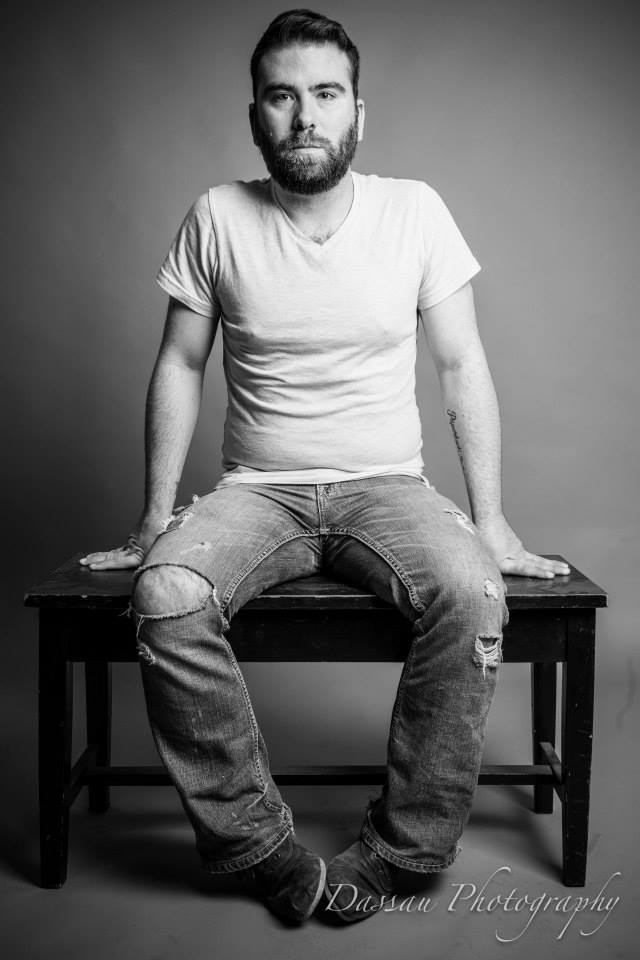

<div class="about-me">

    <div class="row">
        <div class="col-md-offset-1">
            <div class="col-md-4">
                
            </div>
            <div class="col-md-6">
                <h2>Hello, my name's David Dassau</h2>
                <h4>Web Developer / Photographer / Ravenclaw</h4>
                <p>I have been a creative artist for most of my life. Writing, drawing, casting spells: you name it, I've at least attempted it. However, back in 2012, I took the that fated red pill, and wandered down that deep, dark rabbit hole that is web design and development. Once I started learning about the basics, I couldn't get enough. My very first site was a blog/comedy site that was 100% HTML and CSS, so any time I wanted to move stuff around on the site, I had to do so manually. It was exhausting. Cut to me, 4 years later, back in school at the Nashville Software School, learning how to make websites where you can DYNAMICALLY display content.</p>
                <p>I consider myself extremely lucky to be able to do what I do every day. With all the gifts and pleaseantries that I am afforded in my daily life, I find that there is little room left to complain.</p>
            </div>
        </div>
    </div>

</div>